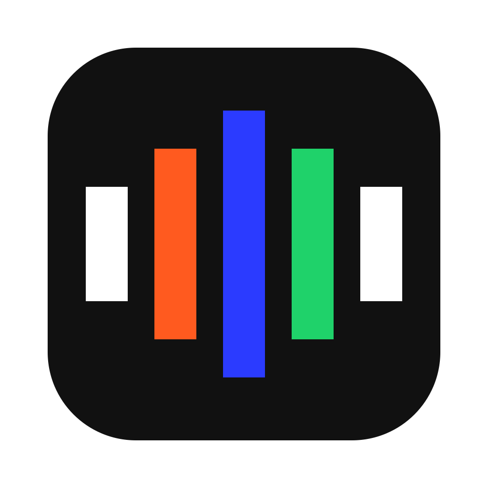
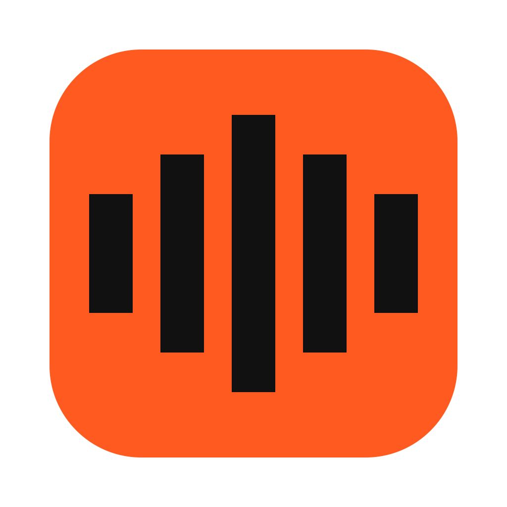
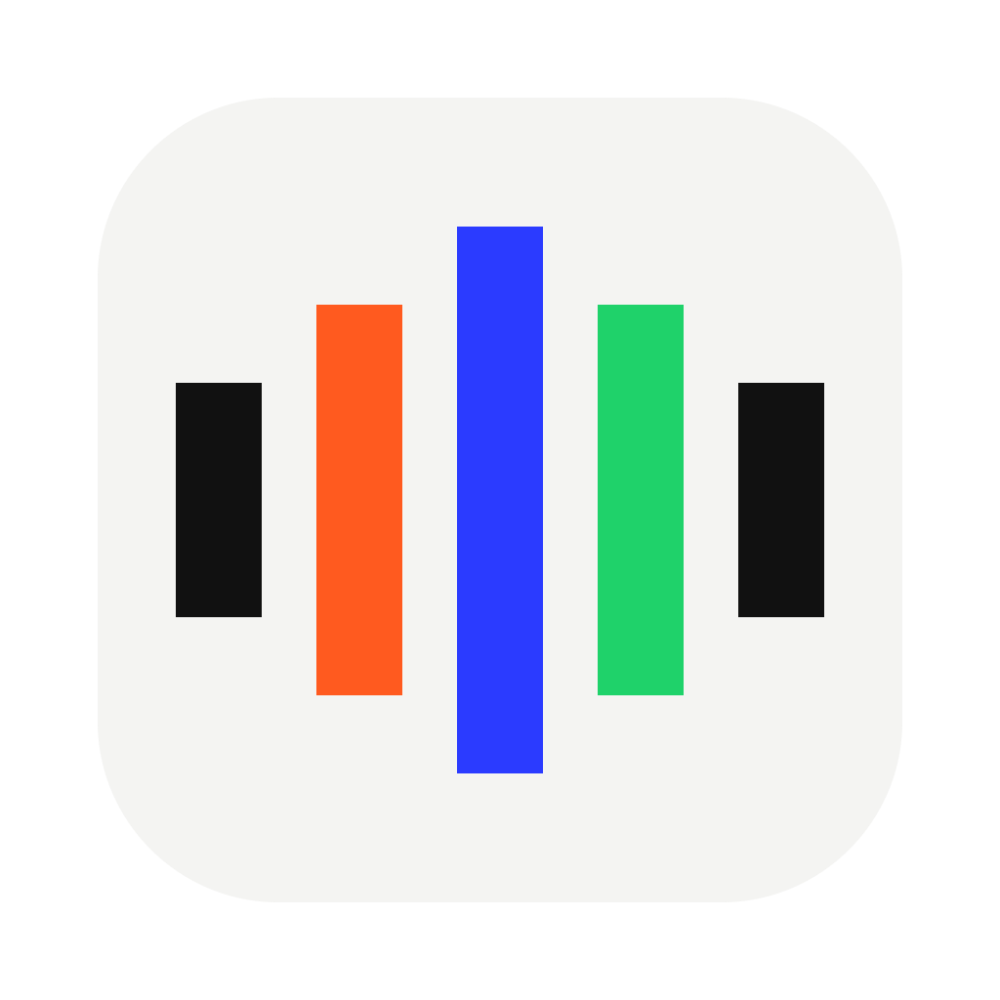

CBW AIdictéeVous parlez. Le texte arrive là où se trouve le curseur.
Utilisez le style d'affichage pour un seul chiffre fort par écran : un minuteur, un nombre de mots, une latence.


Grille macOS : tuile squircle de 824 px, marge transparente de 100 px, toile de 1024 px. Les barres ont des extrémités carrées, dans le style du site.
Micro ouvert, niveau en direct, touche de raccourci maintenue.
Transcription, nettoyage LLM, téléchargement, focus, liens.
Texte collé, réglage enregistré, test réussi.
La transcription tourne en local. Le nettoyage par IA retire les hésitations et corrige la ponctuation avant de coller le texte.
Dernière dictée il y a 3 min · 1,8 s de traitement
Les blocs se structurent avec des traits de 2 px, sans ombre floue.